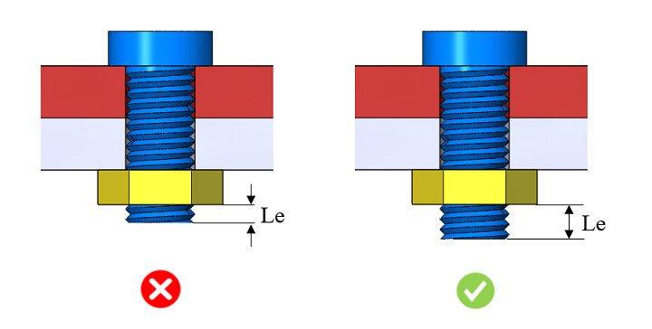

本ルールは、ナットまたは最後にかみ合うコンポーネントが締結された後に、ファスナーのねじ長さが不足していないかをチェックします。
ねじが完全にかみ合うことを保証するため、ナットまたは最後にかみ合うコンポーネントの外側には、十分なねじ長さが確保されている必要があります。一般的なガイドラインでは、ナット上面から少なくとも「ねじピッチの2倍」の長さが突出していることが推奨されます。ねじのかみ合いが不十分な場合、ボルト締結部が緩み、組立不良を引き起こす可能性があります。
一般的な指針として、ナットの上面から少なくとも「ねじピッチの2倍」のねじ長さが突出していることを推奨します。

Le = ねじ突出長さ（Extended Thread Length）
注記:
本ルールは、DFMPro 設定に基づき、トップレベルのアセンブリ パーツに対して実行できます。
本チェックを正しく実行するためには、アセンブリ内のボルトを識別するために、ハードウェア名およびハードウェア種別の情報を必ず入力する必要があります。ハードウェアの構成については、ハードウェア データベースを参照してください。